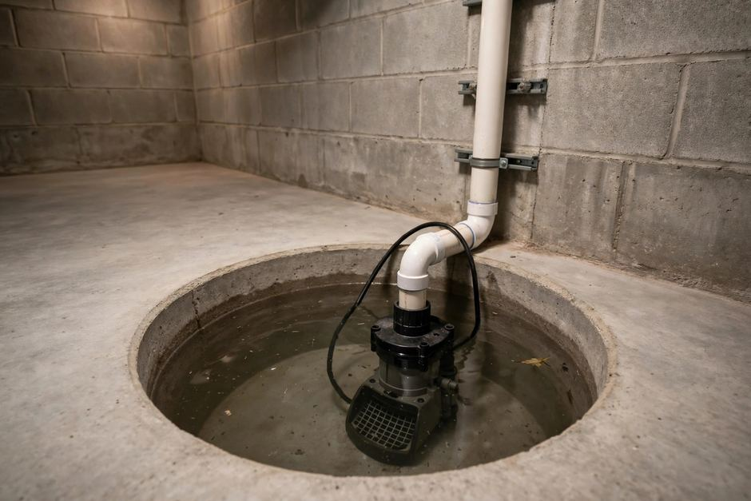
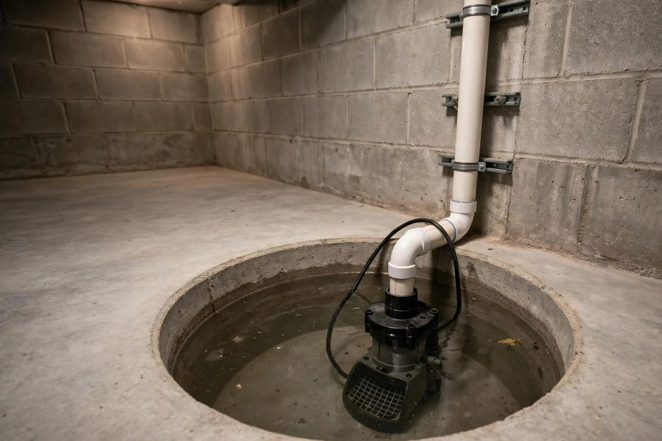

Sump Pump Services
Sump Pump Installation in Belleville, IL
A sump pump moves groundwater away from below-grade spaces before it reaches floors and stored items. This page covers installation, repair, and replacement in one place, including discharge routing and backup power options. Hinkle Plumbing Company assesses basins, pumps, and discharge routes in Belleville, IL, with basement plumbing context for connected systems.
1610 W Main St, Belleville, IL 62220Monday through Friday, 8:00 AM to 4:30 PM(618) 677-6556
What This Service Covers
Sump Pump Scope in Belleville
Sump pump scope covers new installation, repair of existing units, replacement of failed units, and discharge routing review for homes in Belleville, IL. Each part below is assessed on its own findings, and backup power is discussed as part of planning.
New Sump Installation
New installation covers basin placement, pump selection context, discharge routing, and power supply review. Groundwater patterns, floor layout, and discharge destination shape the plan, and City discharge guidance is explained during planning.
Sump Pump Repair
Repair covers float switches, check valves, discharge piping, and pump operation faults where repair is suitable. Fault findings shape the repair scope, and remaining pump condition is reviewed before repair is chosen over replacement.
Sump Pump Replacement
Replacement covers removal of a failed unit and installation of a replacement in the existing basin where suitable. Basin condition, discharge piping, and power context are reviewed, and replacement scope reflects the findings for the system.
Discharge Routing Review
Discharge routing is reviewed against City guidance, which says the sump pipe should always discharge directly into your yard or storm sewer. Guidance is presented as guidance, not as a code requirement, and routing away from the foundation is discussed.
Battery Backup Options
Battery backup provides pumping during power loss, which often coincides with storms when pumping matters most. Battery capacity context, alarm options, and maintenance needs are discussed in general terms during planning.
Water-Powered Backup Options
Water-powered backup uses water supply pressure to move sump water during power loss. Supply context, discharge needs, and suitability for the home are discussed, and backup choice reflects household priorities and system layout.
About Hinkle Plumbing Company
Sump Pump Work From a Belleville Base
Hinkle Plumbing Company covers sump pump installation, repair, and replacement for Belleville homes, working from its city office. Basin, pump, discharge, and backup findings are reviewed together, and scope is discussed before work begins.
Clay-rich soil holds water near foundations, and seasonal rain with Richland Creek drainage shapes groundwater pressure on below-grade spaces in Belleville. Sump systems respond to that pressure by collecting and removing groundwater before it reaches floors. Hinkle Plumbing Company reviews pump operation and discharge routing in that context, and sewer backup patterns are considered where floor drains share the basement space.

How we workImage showing a sump basin and pump in a basement in Belleville.
How Assessment Works
Sump Pump Assessment Steps
The steps flex with the condition of the job, but the sequence stays the same.
Discuss Water Patterns
Basin water levels, pump cycling, wet-condition timing, and prior flooding observations are discussed. Pattern details help separate pump faults from discharge faults and from groundwater volume concerns.
Inspect Basin and Pump
Basin condition, pump operation, float movement, and check valve function are inspected. Findings shape whether repair, replacement, or discharge adjustment is discussed for the system.
Review Discharge Route
Discharge piping, outlet location, and freeze protection context are reviewed. Routing away from the foundation is discussed, and City guidance on your yard or storm sewer discharge is explained in plain terms.
Discuss Backup Power
Battery backup and water-powered backup options are discussed with household priorities in mind. Backup choice reflects power loss patterns, maintenance preferences, and system layout for the home.
Check Operation
After work, pump cycling, discharge flow, and alarm context are checked where relevant. Findings are discussed, and maintenance observations are shared so the system is understood as ongoing protection.
Pump Types and Approaches
Sump Pump Types and Backup Choices
Sump pump types differ in placement, operation, and maintenance context. Backup choices differ in power source and household fit, and selection reflects basin layout and wet-condition patterns for the home.
Submersible Pumps
Submersible pumps sit inside the basin and operate below water level. Placement, basin depth, and maintenance access shape selection, and pump operation is checked through cycling observations during assessment.
Pedestal Pumps
Pedestal pumps sit above the basin with a motor above water level. Placement suits basins where above-basin access is preferred, and motor and float operation are reviewed during assessment.
Float Switch Review
Float switches control pump cycling based on basin water level. Switch movement, sticking, and adjustment context are reviewed, because switch faults can mimic pump failure in cycling patterns.
Check Valve Review
Check valves prevent discharged water from flowing back into the basin. Valve condition and placement are reviewed, because backflow into the basin creates repeating cycles and added pump wear.
Freeze Protection Context
Discharge piping exposed to cold faces freeze concerns that can block flow. Routing, insulation context, and outlet placement are reviewed, and freeze protection is discussed as part of discharge planning.
Alarm and Monitoring Context
Alarm options alert household members to high water levels or pump faults. Alarm context is discussed in general terms, and household priorities shape whether alarm features are included in the plan.
Common Patterns
When Sump Pump Work Is Discussed
Sump pump concerns often appear during wet conditions, when pumping demand is highest. The patterns below describe common reasons for assessment, without describing a specific property or job.

Pump Running Without Clearing the Basin
A common call describes a pump that runs without lowering basin water, or a basin that refills in a repeating pattern. Assessment checks pump operation, float movement, check valve function, and discharge routing to narrow the fault. Findings shape whether repair, replacement, or discharge adjustment is discussed, and City discharge guidance is explained as part of the review. The pattern is reviewed with related systems, and findings are discussed before work begins.
Basin Water Rising During Storms
A common call describes basin water rising during storms, with power loss adding concern about pumping continuity. Assessment reviews pump capacity context, basin condition, discharge routing, and backup power options. Battery and water-powered backup choices are discussed in general terms, and the plan reflects wet-condition patterns for the home. Observations from assessment are shared, and scope reflects the combined findings for the space.
Signs to Note
Sump Pump Signs That Call for Assessment
Most calls fall into a few patterns. Knowing which pattern applies decides what the visit involves.
Constant or Repeating Cycling
Constant or repeating cycling can signal a switch fault, a check valve fault, or discharge backflow into the basin. Cycling patterns are reviewed with basin and discharge findings before repair or replacement is discussed.
Pump Silent During Wet Conditions
A pump that stays silent while basin water rises calls for assessment of power, switch, and pump condition. Power context and switch movement are checked, because silence alone does not identify the failed part.
Unusual Pump Noise
Unusual noise during operation can reflect wear, debris, or mounting concerns. Noise patterns are reviewed with pump age context and basin condition, and findings shape repair or replacement discussion. Findings guide the next steps.
Water Returning Near the Foundation
Discharge water returning near the foundation can signal routing or outlet placement concerns. Outlet location and ground slope context are reviewed, and routing away from the foundation is discussed. Assessment findings guide the response.
Scope Factors
What Shapes Sump Pump Scope
Pump type, basin work, and discharge routing shape sump scope.
Pump and Basin Work
Pump type, basin condition, and replacement versus repair findings shape the core scope. Assessment findings for pump and basin are reviewed together, and scope is discussed by phone before work is scheduled.
Discharge Routing
Discharge length, outlet placement, and freeze protection context affect routing scope. Routing findings and City guidance are included in the discussion, and restoration needs are reviewed alongside piping work. Assessment findings shape the plan.
Backup Power Options
Battery backup and water-powered backup options add scope where backup is wanted. Backup priorities from the household shape the plan, and readers are invited to call to discuss scope for a specific home.
Reviews from Google
What Customers Say on Google
★★★★★
“Very prompt and responsive, the worker was friendly and informative! Will use this company again!”
★★★★★
“Don did an outstanding job for me when I needed him and highly recommend his business”
★★★★★
“Rated 5.0 out of 5 across 3 Google reviews, all five stars.”

Where should sump discharge water go?
City guidance says the sump pipe should always discharge directly into your yard or storm sewer. This is presented as City guidance, not as a code requirement, and routing away from the foundation is discussed during assessment with that guidance explained plainly.
Does this page cover repair and replacement?
Yes. Installation, repair, and replacement are covered together on this page. Assessment findings for pump, basin, discharge, and power shape whether repair or replacement is discussed, and backup power options are reviewed as part of planning. Assessment findings are discussed plainly, and related observations are reviewed together.
Why discuss backup power for a sump pump?
Power loss often coincides with storms, when pumping demand is highest. Battery backup and water-powered backup options are discussed in general terms, and backup choice reflects household priorities, maintenance preferences, and system layout for the home. Findings are reviewed together, and household observations are included in the discussion.
What affects the scope of sump pump work?
Pump type, basin condition, discharge routing, freeze protection context, and backup power choices shape the scope. Each factor is reviewed during assessment, and readers are invited to call (618) 677-6556 to discuss scope for a specific home in Belleville. Findings are discussed by phone before work is scheduled.
Related services
Other Plumbing Services We Handle

Basement Plumbing in Belleville, IL
Basement plumbing explains sump, drain, ejector, and piping systems together as a connected below-grade cluster.
Sewer Backup in Belleville, IL
Sewer backup assessment reviews floor drain patterns and sewer behavior that can appear alongside sump concerns.
Emergency Plumbing in Belleville, IL
Emergency plumbing covers flooding and urgent plumbing events that call for a call during stated hours.Mon–Fri 8:00 AM–4:30 PM
Discuss Sump Pump Work in Belleville
Call (618) 677-6556 during Monday through Friday, 8:00 AM to 4:30 PM to discuss sump pump work in Belleville. Closed Saturday and Sunday. Basin, pump, discharge, and backup findings are reviewed during assessment.

Talk with the local team
Request Sump Pump Services
Call (618) 677-6556 during office hours, Monday through Friday, 8:00 AM to 4:30 PM. Tell us what is happening and we will talk through the next step.